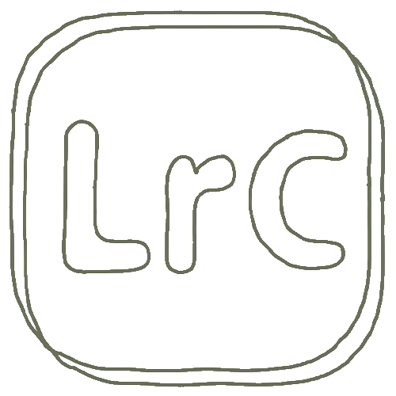
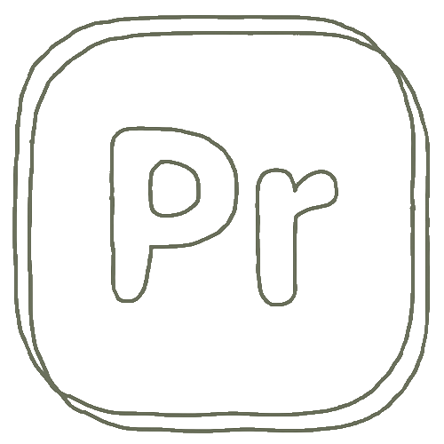
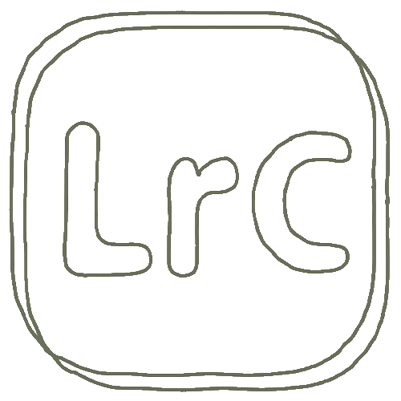
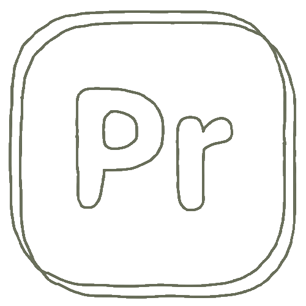

Emma Delcin
OM MIG
Mit navn er Emma og jeg er en glad og smilende pige på 24 år. Til daglig bor jeg i Odense med min lillesøster og min lille Labradoodle Baloo.
Samtidig læser jeg til multimediedesigner på UCL i Odense. Det gør jeg, da det er en uddannelse, der giver mig mulighed for at udfolde mig kreativt hver dag. Her er det især grafisk design, hjemmesider og visuelidentitet, der har fanget min interesse. Og jeg ønsker derfor at udvide min kompetencer inden for disse områder igennem de næste 2 år.
Ved siden af studiet elsker jeg at bruge tid med min familie, venner og mine hunde. Som person er jeg kreativ, til tider perfektionistisk og utrolig arbejdsom.
Emma Delcin
MINE KOMPETANCER

KREATIVITET
Jeg er af natur utrolig kreativ og har været det så længe jeg kan huske. Jeg er meget hands on og har altid elsket at se et projekt fra start til slut.
GRAFISK DESIGN
Jeg har erfaring inden for folder, plakater og logodesign. Her ser jeg især farver, typografi og layout, som vigtige elementer.
KODNING
Jeg er helt ny inden for kodning, men har dog allerede set det sjove i det. På trods af at jeg aldrig har kodet en dag i mit liv før denne hjemmeside, så syntes jeg faktisk at det er gået helt okay. Jeg har opnået forståelse inden for HTML og CSS.
ADOBE PROGRAMMER
Jeg har brugt meget tid i Adobe programmer især Illustrator, InDesign og Xd, men har også udviklet kompetencer inden for Photoshop, Lightroom og Premier Pro.
 


